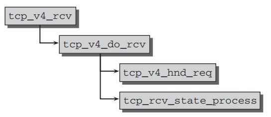
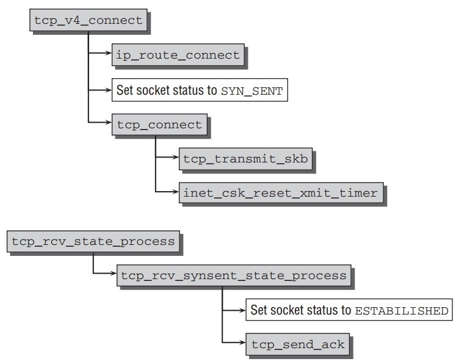
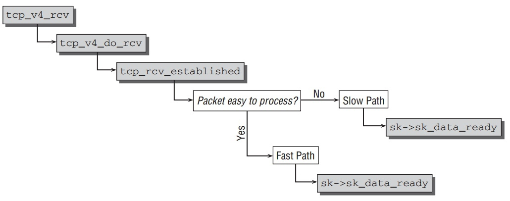
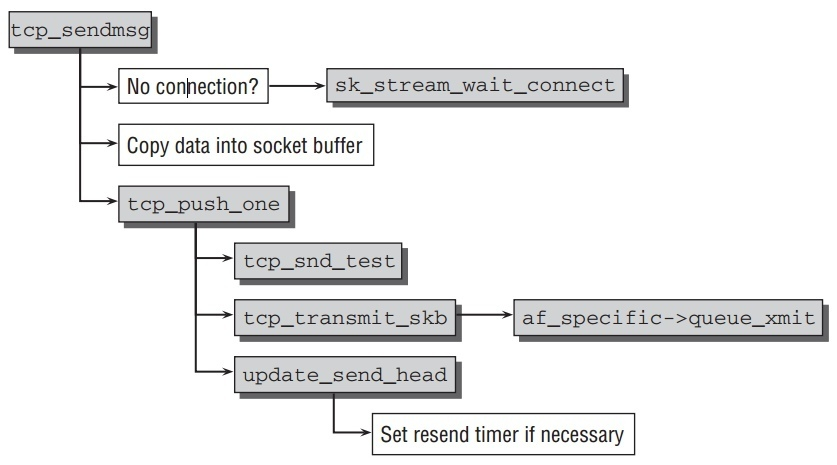

Transport layer
Table of Contents
UDP
在Network layer中, ip_local_deliver 把IP包发送往 transport layer.
net/ipv4/udp.c 中的 udp_rcv 进一步处理 UDP 数据报文包.相应的代码流程如下.

udp_rcv 函数仅仅是 __udp4_lib_rcv 的一个封装,因为这代码与RFC3828中定义的UDP-lite协议的实现所共享.
和其他协议层一样,函数的输入参数是socket buffer.一旦到这数据包是完整,需要使用 __udp4_lib_lookup 找到侦听socket.链路参数能从UDP头中获取,它的结果如下:

- ‘‘Source’’ 和 ‘‘Destination Port’’指定端口号,可接受的值从0 到65.535(因为使用16字节.
- ‘‘Length’是字节数总的长度(头部和数据).
UDP 包头在kernel中如下数据结构:
struct udphdr { __be16 source; __be16 dest; __be16 len; __sum16 check; };
net/ipv4/udp.c 中的 __udp4_lib_lookup 使用来寻找这个包将要发送的
kernel内部的socket.当有侦听进程接受此包,代码使用hash方法从全局hash表
udphash 中找到 sock 结构的实例.如果不能找到相应的socket,它将发送一个 destination unreachable 信息给原系统,然后此包被丢弃.
icmp_send(skb, ICMP_DEST_UNREACH, ICMP_PORT_UNREACH, 0);
这里需要 sock 结构来把transport层的数据传递到用户层应用程序,实际上,
在kernel中有2个数据结构来表示socket. sock 是network access layer的接口,而 socket 是用户空间的链接点.这两个结构在之后Application Layer分析.在此,我们感兴趣的是 sock 结构中用来传递数据到上层的方法.这需要允许收到的数据被放到一个socket指定的等待队列中,并且通知接收进程有新的数据到达.现在, sock 结构能缩略到如下简化版:
// include/net/sock.h /* Short version */ struct sock { wait_queue_head_t *sk_sleep; struct sk_buff_head sk_receive_queue; /* Callback */ void (*sk_data_ready)(struct sock *sk, int bytes); }
udp_rcv 找到相应的 sock 实例后,进入函数 udp_queue_rcv_skb, 调用
__udp_queue_rcv_skb ,最后进入 sock_queue_rcv_skb 中,把包放入等待队列.重要的流程如下:
- 等待数据到达的进程通过socket sleep对其等待队列sleep.
- 调用
skb_queue_tail把socket buffer包插入到receive_queuelist 的最后,这个list头在sock结构中. sk_data_ready指向的函数被调用来通知socket有新的数据到达.它唤醒等待此队列的所有sleep的进程.
TCP
相对UDP,TCP提供更多功能.因此,它在kernel中的实现比较困难和复杂.谈及细节问题可以占用整本书.面向连接的TCP通信模型支持安全数据流传输不仅在kernel 中需要更强的管理复杂,同时也需要进一步的操作,比如明示的连接创建通过设备间的握手.
这里主要分析TCP协议的3个主要部分:连接建立,传送/发送包和连接终止.
TCP连接处于一个定义好的状态.所有状态和它们之间转换的规则如下:

TCP Headers
TCP的头部如下图: ./Files/tcp-packet.jpeg
- source和dest指定使用的端口号.
- seq是序列号.指定TCP包在数据流中所处位置.
- ackseq是确认序列号.
- doff是data offset的缩小,指定TCP头结构的长度.
- urg(urgent), ack(acknowledgment), psh(push), rst(reset), syn(synchronize), 和fin是控制标识来检查,建立和终止连接.
- window告诉连接同伴在接收缓冲将满前它能发送多少字节.
- options是长度的其他附加选项.
- 数据起始点是一个32-bit的位置.
头部以 tcphadr 结构实现,如下:
// <tcp.h> struct tcphdr { __be16 source; __be16 dest; __be32 seq; __be32 ack_seq; #if defined(__LITTLE_ENDIAN_BITFIELD) __u16 res1:4, doff:4, fin:1, syn:1, rst:1, psh:1, ack:1, urg:1, ece:1, cwr:1; #elif defined(__BIG_ENDIAN_BITFIELD) __u16 doff:4, res1:4, cwr:1, ece:1, urg:1, ack:1, psh:1, rst:1, syn:1, fin:1; #else #error "Adjust your <asm/byteorder.h> defines" #endif __be16 window; __sum16 check; __be16 urg_ptr; }
Receiving TCP Data
所有TCP行为(连接建立,关闭和数据传输)都通过发送拥有特定属性和不同标识的数据包.在讨论状态转换前,先分析TCP数据如何传递到transport layer和头部在那裏被分析.
tcp_v4_rcv 是被IP层处理完的包传入到TCP层的入口点.流程如下:

每个TCP socket在以下3个hash表之一中:
- 完全连接的Sockets.
- 等待连接(listen状态)的Sockets.
- 正在建立连接(3次握手)的Sockets.
做做完对数据包的一些检查,并拷贝一些头信息到控制模块后,kernel找寻正在等待处理此包的socket通过函数 __inet_lookup .这个函数进一步调用两个函数来检查不同的hash表. __inet_lookup_established 试图返回一个连接好的
socket. 如果没有找到, __inet_lookup_listener 被调用来检查所有侦听中的sockets.
两个函数都把连接的不同元素和起来计算hash值来找到对应的sock.当搜索侦听 socket时,一个score的方法被使用来找到最合适的候选sockets.
与UDP不同,当合适的sock结构找到工作并不完结.依赖于所处连接状态,有必要做如上图的状态转换. tcp_v4_do_rcv 好比一个分路器,把代码路径基于socket
站柜台分成不同的分支.
Three-Way Handshake
在TCP链路能被使用前,client和host之间必须建立连接.有两种不同的连接建立方式: active和passive.
在建立连接前,client的socket处于CLOSED状态,而server的socket处理LISTEN状态.
TCP 连接的建立过程通过交互3个TCP包完成,所以被熟知为"3次握手".如 TCP状态图所示,如下的行为进行:
- client发送SYN包给server告诉连接请求.client的socket状态从CLOSED转换到SYNSENT.
- server在侦听中的socket收到连接请求,然后返回SYN和ACK的包. server的 socket状态从LISTEN转换到SYNREC.
- client的socket收到SYN/ACK包并转换到ESTABLISHED状态,表明连接已经建立.一个ACK包发给server.
- server收到ACK包并转换到ESTABLISHED状态.两端的连接创建好,数据交互可以开始.
每个发送包都被赋予一个序列号,并且每个包的收到必须由接收方确认.如下一个连接请求的例子:
1 192.168.0.143 192.168.1.10 TCP 1025 > http [SYN] Seq=2895263889 Ack=0 2 192.168.1.10 192.168.0.143 TCP http > 1025 [SYN, ACK] Seq=2882478813 Ack=289526 3 192.168.0.143 192.168.1.10 TCP 1025 > http [ACK] Seq=2895263890 Ack=2882478814
Passive Connection Establishment
主动建立连接不是由kernel自己发出,而是通过收到连接请求的SYN包所触发.因此起始点是接收函数 tcp_v4_rcv ,如上节所述,此函数找到侦听socket并调用
tcp_v4_do_rcv, 它的代码流程如下:

tcp_v4_hnd_req 被调用来进行网络层创建新连接所需要的一些初始化工作.实际的状态转换在 tcp_rcv_state_process ,其中包含一长串case语句区分可能的socket状态,并触发合适的转换函数.
socket状态定义如下:
// include/net/tcp_states.h enum { TCP_ESTABLISHED = 1, TCP_SYN_SENT, TCP_SYN_RECV, TCP_FIN_WAIT1, TCP_FIN_WAIT2, TCP_TIME_WAIT, TCP_CLOSE, TCP_CLOSE_WAIT, TCP_LAST_ACK, TCP_LISTEN, TCP_CLOSING, /* Now a valid state */ TCP_MAX_STATES /* Leave at the end! */ };
如果socket状态处于 TCP_LISTEN 时, 调用
icsk->icsk_af_ops->conn_request(sk, skb) , IPv4时指向
tcp_v4_conn_request 而IPv6时指向 tcp_v6_conn_request .不进一步分析这个函数,重要的是在此函数最后确认包被发送.第一次握手成功.
之后client接收到这个ACK包从通常路径 tcp_rcv_state_process , socket此时状态是 TCP_SYN_RECV ,此时kernel主要任务是转换socket状态到
TCP_ESTABLISHED.
Active Connection Establishment
主动建立连接由用户空间应用调用库函数 connect ,然后通过 socketcall
的系统调用到达kernel函数 tcp_v4_connec, 它的代码流程如下:

函数开始于寻找到目的host的IP路由通过kernel提供的路由功能,当TCP头部被创建并设置相应的值在socket buffer中后, tcp_set_state(sk,
TCP_SYN_SENT); ,socket状态从 CLOSED 转换到 SYN_SENT. 然后
tcp_connect 发送 SYN包到IP层从而到达client( tcp_transmit_skb(sk,
buff, 1, sk->sk_allocation); ). 并且 inet_csk_reset_xmit_timer 创建一个计时器确保能重发包如果在一段时间内没有收到确认包.
现在client必须等到server确认SYN包的收到和确认连接请求的SYN包. 与通常的
TCP接收路径一样,之后到达 tcp_rcv_state_process 分状态处理,这里到
tcp_rcv_synsent_state_process 去处理. socket状态设置为 ESTABLISHED
,并且 tcp_send_ack 发送另外ACK包给server完成建立连接.
Transmission of Data Packets
一旦连接建立好,数据就在设备间传递.但这个过程还是有点难处理的,因为TCP有如下一些要求:
- 字节流以一定顺序传递.
- 丢失的包自动重传.
- 数据流在各方向上独立控制并与主机速度匹配.
包的确认基于序列号.那么序列号是如何被设置的?当一个连接建立,一个随机数产生, 使用 drivers/char/random.c 中的 secure_tcp_sequence_number
。
TCP使用累积确认机制.这意味着一个确认涵盖连续的整个范围的字节.这个ACK数字确认收到所有数据到并包含比这个数字少1的字节.这个数字也表明下一个预期的序列号.
这个机制是用来追踪丢失的包.TCP使用直接的重发机制,也就是,接收端不能要求发送端重发丢失的包.责任就由发送短自动重发丢失的数据段,如果它在一段时间内没有收到确认包.
那么这些过程如何在kernel中实现的了?这里认为连接已经建立,两端都处于 ESTABLISHED状态.
- Receiving Packets
收包代码流程如下图,还是从
tcp_v4_rcv开始,当包收到.
到达
tcp_v4_do_rcv后, 如果连接已经建立,一条快速路径被选择,而不是进入核心状态转换函数,这个与其他状态不同,因为传送数据包是TCP中大部分的工作,必须尽量的快.进入快速路径调用tcp_rcv_established, 这里会分析包的选项,是否容易解析,容易就进入快速路径稍微处理下就调用sk->sk_data_ready交给socket. 否则进入慢速路径,进一步处理之后再交给 socket.包必须满足如下条件之一才能被分类为容易解析:
- 包只包含对上次发送数据的确认信息. make package/atheros-9.2/{clean,prepare,compile,install} V=99
- 数据必须包含下次希望收到的数据.
并且,如下标示都不能被设置: SYN, URG, RST, 或 FIN.因为大部分包属于此类, 所以分为快速和慢速路径是有意义的.
快速路径的主要操作:
- 对包做一些检查,如果属于复杂包,那就把它们放入慢速路径.
- 通过包的长度判断是确认包还是数据包.不难判断,因为确认包不包含数据,长度正好是TCP包头长度.
- 把确认包由
tcp_ack处理,这个函数先过滤掉不正确的包.最重要的任务不是分析信息,而是从重传队列中删除确认过的数据包. - 快速路径直接处理与之前分片连续的收到数据,这个数据包能被确认通过发送
ACK包给发送者,并不需要进一步的再检查.最后
sk_data_read函数通知用户层有新数据要处理.
快速和慢速路径的区别呢?因为TCP有许多的选项,慢速路径的代码更具广泛性.在慢速路径中,数据不能直接发给socket,因为复杂的包选项检查需要进行,然后这些可能引起TCP子系统进一步处理.以乱序到达的数据包将被放在一个特殊的等待队列中,直到一个完整的包完成.
- Sending Packets
TCP包发送以函数
tcp_sendmsg开始,相应的代码流程如下图:
socket的状态在数据发送开始前必然是
TCP_ESTABLISHED, 如果不是, kernel等待直到连接被建立.然后,数据从用户空间拷贝过来构建TCP包.然而发送 TCP包不仅仅如UDP一般简单的构建包头然后传递到IP层.它同时必须考虑如下要求:- 接收端的等待队列有足够的空间容纳此数据.
- ECN机制必须实现来防止连接拥塞.
- TCP slow-start机制要求慢慢增加包大小从通信开始.
- 发送但为确认的包必须重传在一定的时间后,直到它们最终被接收端确认.
重发队列是TCP连接稳定数据发送的关键.稍微分析一下它.包被组装好后,kernel 到达函数
tcp_push_one, 它主要完成如下3个任务:- 先做一些congestion window之类的检查,确认当前能发送此包.
tcp_transmit_skb把包发往IP层使用协议特定的函数指针icsk->icsk_af_ops->queue_xmit.(IPv4使用ip_queue_xmit)tcp_event_new_data_sent充值重传计时器.
与特定socket相关联的sock实例为每个发送的包维护一组重传计数器.kernel使用的超时函数是
tcp_write_timer, 它调用tcp_retransmit_timer如果 ACK没有收到.当重传时,如下需要注意:
- 连接可能已经被关闭.存储的包和计数器从kernel内存中移除.
- 当重传次数超过
sysctl_tcp_retries2,重传被剔除.
Connection Termination
同连接建立一样,TCP的关闭也是通过多此交换包,如图TCP状态转换图.一个连接可以如下两种方式关闭:
- 以其中之一系统的明示请求来终止连接.
- 终止或打断被更高的协议(比如程序崩溃等).
这里分析第一中情况.TCP参与者必须交换4个包来得体的关闭连接.步骤如下:
- 在设备A调用库函数
close来发送一个TCP包,其中设置FIN标志位在头部.A 的socket转换到FIN_WAIT_1状态. - 设备B收到FIN包并返回ACK包.它的socket状态从
ESTABLISHED转换到CLOSE_WAIT. - 收到ACK包后,设备A的socket状态从
FIN_WAIT_1转换到FIN_WAIT_2. - 设备B的socket也执行
close来发送FIN包到A.设备B的socket状态转换到LAST_ACK. - 设备A发送ACK包确认收到FIN包,先到
TIME_WAIT状态,并过段时间自动转换到CLOSED状态. - 设备B收到ACK包,触使它socket状态转换到
CLOSED状态.
当调用库函数 close 来关闭连接, tcp_close 函数被调用.如果socket的状态是 LISTEN,那么很简单,把状态设置为 CLOSED. 因为外部没有设备需要被通知连接的结束.
如果不是 LISTEN 状态, tcp_send_fin 发送一个FIN给对方,并通过调用
tcp_close_state 和 tcp_set_state 来把状态设置为 FIN_WAIT_1.
从 FIN_WAIT_1 到 FIN_WAIT_2 的转换由中心分流函数
tcp_rcv_state_process 完成. 当收到ACK包同过调用 tcp_set_state 来转换状态到 FIN_WAIT_2 .只要在收到对方的FIN包,它就转到 TIME_WAIT,并过段时间自动到 CLOSED 状态.
收到FIN包的对方设备已类似流程关闭.当它处于 ESTABLISHED 时收到第一个
FIN包,在 tcp_rcv_established 中的慢速路径得到处理,发送ACK包,并转换
socket状态到 CLOSE_WAIT.
之后状态转换到 LAST_ACK 通过调用 close 库函数来触发kernel中的
tcp_close_state 函数.只要进一步的一个来自对方的ACK包来关闭连接.这个
ACK包通过 tcp_rcv_state_process 函数处理,把socket状态转到 CLOSED
通过 tcp_done.
reference
__udp4_lib_rcv
int __udp4_lib_rcv(struct sk_buff *skb, struct udp_table *udptable, int proto) { struct sock *sk; struct udphdr *uh; unsigned short ulen; struct rtable *rt = skb_rtable(skb); __be32 saddr, daddr; struct net *net = dev_net(skb->dev); /* * Validate the packet. */ if (!pskb_may_pull(skb, sizeof(struct udphdr))) goto drop; /* No space for header. */ uh = udp_hdr(skb); ulen = ntohs(uh->len); saddr = ip_hdr(skb)->saddr; daddr = ip_hdr(skb)->daddr; if (ulen > skb->len) goto short_packet; if (proto == IPPROTO_UDP) { /* UDP validates ulen. */ if (ulen < sizeof(*uh) || pskb_trim_rcsum(skb, ulen)) goto short_packet; uh = udp_hdr(skb); } if (udp4_csum_init(skb, uh, proto)) goto csum_error; if (rt->rt_flags & (RTCF_BROADCAST|RTCF_MULTICAST)) return __udp4_lib_mcast_deliver(net, skb, uh, saddr, daddr, udptable); sk = __udp4_lib_lookup_skb(skb, uh->source, uh->dest, udptable); if (sk != NULL) { int ret = udp_queue_rcv_skb(sk, skb); sock_put(sk); /* a return value > 0 means to resubmit the input, but * it wants the return to be -protocol, or 0 */ if (ret > 0) return -ret; return 0; } if (!xfrm4_policy_check(NULL, XFRM_POLICY_IN, skb)) goto drop; nf_reset(skb); /* No socket. Drop packet silently, if checksum is wrong */ if (udp_lib_checksum_complete(skb)) goto csum_error; UDP_INC_STATS_BH(net, UDP_MIB_NOPORTS, proto == IPPROTO_UDPLITE); icmp_send(skb, ICMP_DEST_UNREACH, ICMP_PORT_UNREACH, 0); /* * Hmm. We got an UDP packet to a port to which we * don't wanna listen. Ignore it. */ kfree_skb(skb); return 0; short_packet: LIMIT_NETDEBUG(KERN_DEBUG "UDP%s: short packet: From %pI4:%u %d/%d to %pI4:%u\n", proto == IPPROTO_UDPLITE ? "-Lite" : "", &saddr, ntohs(uh->source), ulen, skb->len, &daddr, ntohs(uh->dest)); goto drop; csum_error: /* * RFC1122: OK. Discards the bad packet silently (as far as * the network is concerned, anyway) as per 4.1.3.4 (MUST). */ LIMIT_NETDEBUG(KERN_DEBUG "UDP%s: bad checksum. From %pI4:%u to %pI4:%u ulen %d\n", proto == IPPROTO_UDPLITE ? "-Lite" : "", &saddr, ntohs(uh->source), &daddr, ntohs(uh->dest), ulen); drop: UDP_INC_STATS_BH(net, UDP_MIB_INERRORS, proto == IPPROTO_UDPLITE); kfree_skb(skb); return 0; }
sock_queue_rcv_skb
int sock_queue_rcv_skb(struct sock *sk, struct sk_buff *skb) { int err = 0; int skb_len; /* Cast sk->rcvbuf to unsigned... It's pointless, but reduces number of warnings when compiling with -W --ANK */ if (atomic_read(&sk->sk_rmem_alloc) + skb->truesize >= (unsigned)sk->sk_rcvbuf) { err = -ENOMEM; goto out; } err = sk_filter(sk, skb); if (err) goto out; if (!sk_rmem_schedule(sk, skb->truesize)) { err = -ENOBUFS; goto out; } skb->dev = NULL; skb_set_owner_r(skb, sk); /* Cache the SKB length before we tack it onto the receive * queue. Once it is added it no longer belongs to us and * may be freed by other threads of control pulling packets * from the queue. */ skb_len = skb->len; skb_queue_tail(&sk->sk_receive_queue, skb); if (!sock_flag(sk, SOCK_DEAD)) sk->sk_data_ready(sk, skb_len); out: return err; }
tcp_v4_connect
int tcp_v4_connect(struct sock *sk, struct sockaddr *uaddr, int addr_len) { struct inet_sock *inet = inet_sk(sk); struct tcp_sock *tp = tcp_sk(sk); struct sockaddr_in *usin = (struct sockaddr_in *)uaddr; struct rtable *rt; __be32 daddr, nexthop; int tmp; int err; if (addr_len < sizeof(struct sockaddr_in)) return -EINVAL; if (usin->sin_family != AF_INET) return -EAFNOSUPPORT; nexthop = daddr = usin->sin_addr.s_addr; if (inet->opt && inet->opt->srr) { if (!daddr) return -EINVAL; nexthop = inet->opt->faddr; } tmp = ip_route_connect(&rt, nexthop, inet->saddr, RT_CONN_FLAGS(sk), sk->sk_bound_dev_if, IPPROTO_TCP, inet->sport, usin->sin_port, sk, 1); if (tmp < 0) { if (tmp == -ENETUNREACH) IP_INC_STATS_BH(sock_net(sk), IPSTATS_MIB_OUTNOROUTES); return tmp; } if (rt->rt_flags & (RTCF_MULTICAST | RTCF_BROADCAST)) { ip_rt_put(rt); return -ENETUNREACH; } if (!inet->opt || !inet->opt->srr) daddr = rt->rt_dst; if (!inet->saddr) inet->saddr = rt->rt_src; inet->rcv_saddr = inet->saddr; if (tp->rx_opt.ts_recent_stamp && inet->daddr != daddr) { /* Reset inherited state */ tp->rx_opt.ts_recent = 0; tp->rx_opt.ts_recent_stamp = 0; tp->write_seq = 0; } if (tcp_death_row.sysctl_tw_recycle && !tp->rx_opt.ts_recent_stamp && rt->rt_dst == daddr) { struct inet_peer *peer = rt_get_peer(rt); /* * VJ's idea. We save last timestamp seen from * the destination in peer table, when entering state * TIME-WAIT * and initialize rx_opt.ts_recent from it, * when trying new connection. */ if (peer != NULL && peer->tcp_ts_stamp + TCP_PAWS_MSL >= get_seconds()) { tp->rx_opt.ts_recent_stamp = peer->tcp_ts_stamp; tp->rx_opt.ts_recent = peer->tcp_ts; } } inet->dport = usin->sin_port; inet->daddr = daddr; inet_csk(sk)->icsk_ext_hdr_len = 0; if (inet->opt) inet_csk(sk)->icsk_ext_hdr_len = inet->opt->optlen; tp->rx_opt.mss_clamp = 536; /* Socket identity is still unknown (sport may be zero). * However we set state to SYN-SENT and not releasing socket * lock select source port, enter ourselves into the hash tables and * complete initialization after this. */ tcp_set_state(sk, TCP_SYN_SENT); err = inet_hash_connect(&tcp_death_row, sk); if (err) goto failure; err = ip_route_newports(&rt, IPPROTO_TCP, inet->sport, inet->dport, sk); if (err) goto failure; /* OK, now commit destination to socket. */ sk->sk_gso_type = SKB_GSO_TCPV4; sk_setup_caps(sk, &rt->u.dst); if (!tp->write_seq) tp->write_seq = secure_tcp_sequence_number(inet->saddr, inet->daddr, inet->sport, usin->sin_port); inet->id = tp->write_seq ^ jiffies; err = tcp_connect(sk); rt = NULL; if (err) goto failure; return 0; failure: /* * This unhashes the socket and releases the local port, * if necessary. */ tcp_set_state(sk, TCP_CLOSE); ip_rt_put(rt); sk->sk_route_caps = 0; inet->dport = 0; return err; }
tcp_connect
int tcp_connect(struct sock *sk) { struct tcp_sock *tp = tcp_sk(sk); struct sk_buff *buff; tcp_connect_init(sk); buff = alloc_skb_fclone(MAX_TCP_HEADER + 15, sk->sk_allocation); if (unlikely(buff == NULL)) return -ENOBUFS; /* Reserve space for headers. */ skb_reserve(buff, MAX_TCP_HEADER); tp->snd_nxt = tp->write_seq; tcp_init_nondata_skb(buff, tp->write_seq++, TCPCB_FLAG_SYN); TCP_ECN_send_syn(sk, buff); /* Send it off. */ TCP_SKB_CB(buff)->when = tcp_time_stamp; tp->retrans_stamp = TCP_SKB_CB(buff)->when; skb_header_release(buff); __tcp_add_write_queue_tail(sk, buff); sk->sk_wmem_queued += buff->truesize; sk_mem_charge(sk, buff->truesize); tp->packets_out += tcp_skb_pcount(buff); tcp_transmit_skb(sk, buff, 1, sk->sk_allocation); /* We change tp->snd_nxt after the tcp_transmit_skb() call * in order to make this packet get counted in tcpOutSegs. */ tp->snd_nxt = tp->write_seq; tp->pushed_seq = tp->write_seq; TCP_INC_STATS(sock_net(sk), TCP_MIB_ACTIVEOPENS); /* Timer for repeating the SYN until an answer. */ inet_csk_reset_xmit_timer(sk, ICSK_TIME_RETRANS, inet_csk(sk)->icsk_rto, TCP_RTO_MAX); return 0; }
tcp_sendmsg
int tcp_sendmsg(struct kiocb *iocb, struct socket *sock, struct msghdr *msg, size_t size) { struct sock *sk = sock->sk; struct iovec *iov; struct tcp_sock *tp = tcp_sk(sk); struct sk_buff *skb; int iovlen, flags; int mss_now, size_goal; int err, copied; long timeo; lock_sock(sk); TCP_CHECK_TIMER(sk); flags = msg->msg_flags; timeo = sock_sndtimeo(sk, flags & MSG_DONTWAIT); /* Wait for a connection to finish. */ if ((1 << sk->sk_state) & ~(TCPF_ESTABLISHED | TCPF_CLOSE_WAIT)) if ((err = sk_stream_wait_connect(sk, &timeo)) != 0) goto out_err; /* This should be in poll */ clear_bit(SOCK_ASYNC_NOSPACE, &sk->sk_socket->flags); mss_now = tcp_send_mss(sk, &size_goal, flags); /* Ok commence sending. */ iovlen = msg->msg_iovlen; iov = msg->msg_iov; copied = 0; err = -EPIPE; if (sk->sk_err || (sk->sk_shutdown & SEND_SHUTDOWN)) goto out_err; while (--iovlen >= 0) { size_t seglen = iov->iov_len; unsigned char __user *from = iov->iov_base; iov++; while (seglen > 0) { int copy = 0; int max = size_goal; skb = tcp_write_queue_tail(sk); if (tcp_send_head(sk)) { if (skb->ip_summed == CHECKSUM_NONE) max = mss_now; copy = max - skb->len; } if (copy <= 0) { new_segment: /* Allocate new segment. If the interface is SG, * allocate skb fitting to single page. */ if (!sk_stream_memory_free(sk)) goto wait_for_sndbuf; skb = sk_stream_alloc_skb(sk, select_size(sk), sk->sk_allocation); if (!skb) goto wait_for_memory; /* * Check whether we can use HW checksum. */ if (sk->sk_route_caps & NETIF_F_ALL_CSUM) skb->ip_summed = CHECKSUM_PARTIAL; skb_entail(sk, skb); copy = size_goal; max = size_goal; } /* Try to append data to the end of skb. */ if (copy > seglen) copy = seglen; /* Where to copy to? */ if (skb_tailroom(skb) > 0) { /* We have some space in skb head. Superb! */ if (copy > skb_tailroom(skb)) copy = skb_tailroom(skb); if ((err = skb_add_data(skb, from, copy)) != 0) goto do_fault; } else { int merge = 0; int i = skb_shinfo(skb)->nr_frags; struct page *page = TCP_PAGE(sk); int off = TCP_OFF(sk); if (skb_can_coalesce(skb, i, page, off) && off != PAGE_SIZE) { /* We can extend the last page * fragment. */ merge = 1; } else if (i == MAX_SKB_FRAGS || (!i && !(sk->sk_route_caps & NETIF_F_SG))) { /* Need to add new fragment and cannot * do this because interface is non-SG, * or because all the page slots are * busy. */ tcp_mark_push(tp, skb); goto new_segment; } else if (page) { if (off == PAGE_SIZE) { put_page(page); TCP_PAGE(sk) = page = NULL; off = 0; } } else off = 0; if (copy > PAGE_SIZE - off) copy = PAGE_SIZE - off; if (!sk_wmem_schedule(sk, copy)) goto wait_for_memory; if (!page) { /* Allocate new cache page. */ if (!(page = sk_stream_alloc_page(sk))) goto wait_for_memory; } /* Time to copy data. We are close to * the end! */ err = skb_copy_to_page(sk, from, skb, page, off, copy); if (err) { /* If this page was new, give it to the * socket so it does not get leaked. */ if (!TCP_PAGE(sk)) { TCP_PAGE(sk) = page; TCP_OFF(sk) = 0; } goto do_error; } /* Update the skb. */ if (merge) { skb_shinfo(skb)->frags[i - 1].size += copy; } else { skb_fill_page_desc(skb, i, page, off, copy); if (TCP_PAGE(sk)) { get_page(page); } else if (off + copy < PAGE_SIZE) { get_page(page); TCP_PAGE(sk) = page; } } TCP_OFF(sk) = off + copy; } if (!copied) TCP_SKB_CB(skb)->flags &= ~TCPCB_FLAG_PSH; tp->write_seq += copy; TCP_SKB_CB(skb)->end_seq += copy; skb_shinfo(skb)->gso_segs = 0; from += copy; copied += copy; if ((seglen -= copy) == 0 && iovlen == 0) goto out; if (skb->len < max || (flags & MSG_OOB)) continue; if (forced_push(tp)) { tcp_mark_push(tp, skb); __tcp_push_pending_frames(sk, mss_now, TCP_NAGLE_PUSH); } else if (skb == tcp_send_head(sk)) tcp_push_one(sk, mss_now); continue; wait_for_sndbuf: set_bit(SOCK_NOSPACE, &sk->sk_socket->flags); wait_for_memory: if (copied) tcp_push(sk, flags & ~MSG_MORE, mss_now, TCP_NAGLE_PUSH); if ((err = sk_stream_wait_memory(sk, &timeo)) != 0) goto do_error; mss_now = tcp_send_mss(sk, &size_goal, flags); } } out: if (copied) tcp_push(sk, flags, mss_now, tp->nonagle); TCP_CHECK_TIMER(sk); release_sock(sk); return copied; do_fault: if (!skb->len) { tcp_unlink_write_queue(skb, sk); /* It is the one place in all of TCP, except connection * reset, where we can be unlinking the send_head. */ tcp_check_send_head(sk, skb); sk_wmem_free_skb(sk, skb); } do_error: if (copied) goto out; out_err: err = sk_stream_error(sk, flags, err); TCP_CHECK_TIMER(sk); release_sock(sk); return err; }
tcp_close
void tcp_close(struct sock *sk, long timeout) { struct sk_buff *skb; int data_was_unread = 0; int state; lock_sock(sk); sk->sk_shutdown = SHUTDOWN_MASK; if (sk->sk_state == TCP_LISTEN) { tcp_set_state(sk, TCP_CLOSE); /* Special case. */ inet_csk_listen_stop(sk); goto adjudge_to_death; } /* We need to flush the recv. buffs. We do this only on the * descriptor close, not protocol-sourced closes, because the * reader process may not have drained the data yet! */ while ((skb = __skb_dequeue(&sk->sk_receive_queue)) != NULL) { u32 len = TCP_SKB_CB(skb)->end_seq - TCP_SKB_CB(skb)->seq - tcp_hdr(skb)->fin; data_was_unread += len; __kfree_skb(skb); } sk_mem_reclaim(sk); /* As outlined in RFC 2525, section 2.17, we send a RST here because * data was lost. To witness the awful effects of the old behavior of * always doing a FIN, run an older 2.1.x kernel or 2.0.x, start a bulk * GET in an FTP client, suspend the process, wait for the client to * advertise a zero window, then kill -9 the FTP client, wheee... * Note: timeout is always zero in such a case. */ if (data_was_unread) { /* Unread data was tossed, zap the connection. */ NET_INC_STATS_USER(sock_net(sk), LINUX_MIB_TCPABORTONCLOSE); tcp_set_state(sk, TCP_CLOSE); tcp_send_active_reset(sk, sk->sk_allocation); } else if (sock_flag(sk, SOCK_LINGER) && !sk->sk_lingertime) { /* Check zero linger _after_ checking for unread data. */ sk->sk_prot->disconnect(sk, 0); NET_INC_STATS_USER(sock_net(sk), LINUX_MIB_TCPABORTONDATA); } else if (tcp_close_state(sk)) { /* We FIN if the application ate all the data before * zapping the connection. */ /* RED-PEN. Formally speaking, we have broken TCP state * machine. State transitions: * * TCP_ESTABLISHED -> TCP_FIN_WAIT1 * TCP_SYN_RECV -> TCP_FIN_WAIT1 (forget it, it's impossible) * TCP_CLOSE_WAIT -> TCP_LAST_ACK * * are legal only when FIN has been sent (i.e. in window), * rather than queued out of window. Purists blame. * * F.e. "RFC state" is ESTABLISHED, * if Linux state is FIN-WAIT-1, but FIN is still not sent. * * The visible declinations are that sometimes * we enter time-wait state, when it is not required really * (harmless), do not send active resets, when they are * required by specs (TCP_ESTABLISHED, TCP_CLOSE_WAIT, when * they look as CLOSING or LAST_ACK for Linux) * Probably, I missed some more holelets. * --ANK */ tcp_send_fin(sk); } sk_stream_wait_close(sk, timeout); adjudge_to_death: state = sk->sk_state; sock_hold(sk); sock_orphan(sk); /* It is the last release_sock in its life. It will remove backlog. */ release_sock(sk); /* Now socket is owned by kernel and we acquire BH lock to finish close. No need to check for user refs. */ local_bh_disable(); bh_lock_sock(sk); WARN_ON(sock_owned_by_user(sk)); percpu_counter_inc(sk->sk_prot->orphan_count); /* Have we already been destroyed by a softirq or backlog? */ if (state != TCP_CLOSE && sk->sk_state == TCP_CLOSE) goto out; /* This is a (useful) BSD violating of the RFC. There is a * problem with TCP as specified in that the other end could * keep a socket open forever with no application left this end. * We use a 3 minute timeout (about the same as BSD) then kill * our end. If they send after that then tough - BUT: long enough * that we won't make the old 4*rto = almost no time - whoops * reset mistake. * * Nope, it was not mistake. It is really desired behaviour * f.e. on http servers, when such sockets are useless, but * consume significant resources. Let's do it with special * linger2 option. --ANK */ if (sk->sk_state == TCP_FIN_WAIT2) { struct tcp_sock *tp = tcp_sk(sk); if (tp->linger2 < 0) { tcp_set_state(sk, TCP_CLOSE); tcp_send_active_reset(sk, GFP_ATOMIC); NET_INC_STATS_BH(sock_net(sk), LINUX_MIB_TCPABORTONLINGER); } else { const int tmo = tcp_fin_time(sk); if (tmo > TCP_TIMEWAIT_LEN) { inet_csk_reset_keepalive_timer(sk, tmo - TCP_TIMEWAIT_LEN); } else { tcp_time_wait(sk, TCP_FIN_WAIT2, tmo); goto out; } } } if (sk->sk_state != TCP_CLOSE) { sk_mem_reclaim(sk); if (tcp_too_many_orphans(sk, 0)) { if (net_ratelimit()) printk(KERN_INFO "TCP: too many of orphaned " "sockets\n"); tcp_set_state(sk, TCP_CLOSE); tcp_send_active_reset(sk, GFP_ATOMIC); NET_INC_STATS_BH(sock_net(sk), LINUX_MIB_TCPABORTONMEMORY); } } if (sk->sk_state == TCP_CLOSE) inet_csk_destroy_sock(sk); /* Otherwise, socket is reprieved until protocol close. */ out: bh_unlock_sock(sk); local_bh_enable(); sock_put(sk); }